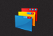
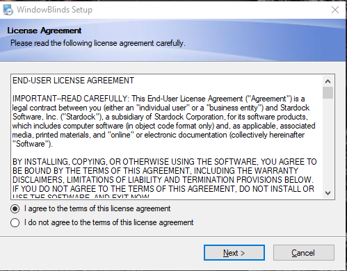
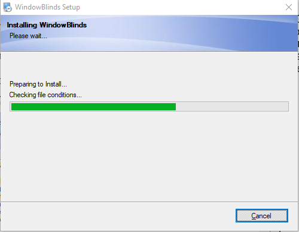
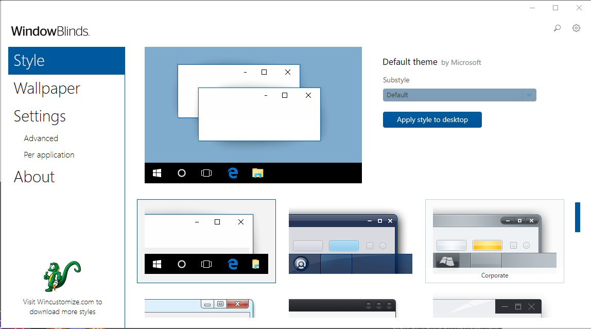
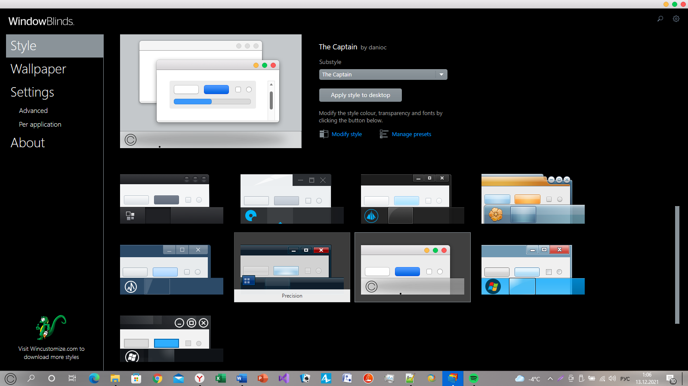
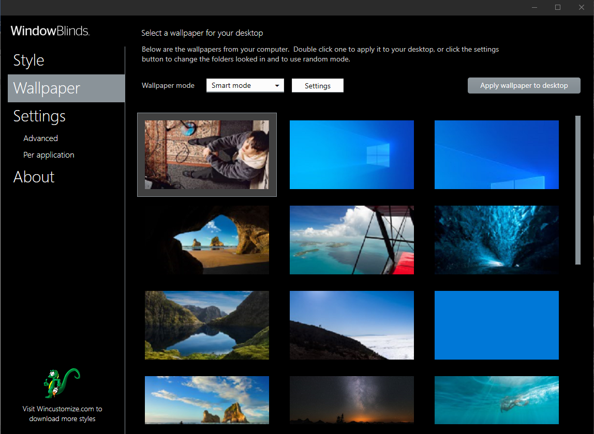
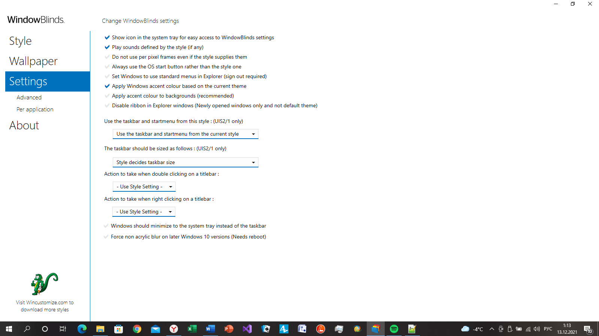

WindowBlinds
Рисунок 1 - WindowBlinds
WindowBlinds – утилита, позволяющая менять внешний вид Windows 10, а также другие настройки системы.
Установка происходит быстро. Запускаем установщика, принимаем соглашение, выбираем папку хранения файла и запускаем процесс. Программа готова к работе!
Рисунок 2 - Принятие соглашения
Рисунок 3 - Процесс установки
«WindowBlinds не будет заставлять вас долго ковыряться в настройках, а одним махом изменит внешний вид Windows 10 с помощью встроенных стилей оформления. Их применение полностью преображает внешний вид окон, кнопок, приложений, шрифтов, иконок и других элементов оформления операционной системы.» - такое описание программы я нашла на просторах сети Интернет. Но действительно ли это так?
Здесь не так много вкладок. Основная и самая интересная это «Style». Она позволяет изменить тему рабочего стола вашего компьютера на внешний вид более ранних версий Windows, а так же других ОС.
Рисунок 4 - Интерфейс программы
Например, я захотела превратить ноутбук в MACBook. Для этого я всего лишь дважды кликнула на интересующую меня тему, дождалась загрузки и получила результат, показанный на рисунке 5. Не буду скрывать, ожидала я больших изменений, но как говорится «итак пойдет».
Рисунок 5 - Рабочий стол после изменений
Так же мы можем поменять обои рабочего стола (Рисунок 6) и более детальные настройки (Рисунок 7).
Рисунок 6 - Вкладка "Wallpaper"
Рисунок 7 - Вкладка "Settings"
Программа отличается своей простотой, что позволяет быстро в ней разобраться не смотря на англоязычный интерфейс. Но настроек крайне мало, она больше подходит для тех пользователей, кому не нравится оформление их операционной системы.